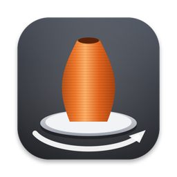

PrintreelSupport
Answers to common questions are below. If yours isn’t, email k.fitzgerald310@gmail.com with your Mac model and macOS version.
Using Printreel
Which files can it open?
STL (binary and ASCII), 3MF and OBJ. 3MF files keep their objects, colors and units, including Bambu Studio and PrusaSlicer projects (the filament color of each object or part). OBJ material files (.mtl), textures and painted multi-material areas aren’t read yet.
The model is tiny or huge. What happened?
STL and OBJ files don’t say which unit they use. Printreel assumes millimeters and shows the size; if a model is under 3 mm or over 1.5 m, it offers a one-click fix for files saved in inches or meters.
Which sizes should I use for my shop?
The presets are named by job (listing video, listing photos, social video, model page) and follow common marketplace guidance, such as a square 10-second video under 15 seconds. Check each marketplace’s current rules before you list.
Can I use the renders as my product photos?
Renders are previews of the model, not photos of your print. Many marketplaces ask for photos of the actual item, so add at least one real photo to each listing.
How do I make a transparent PNG?
Choose Transparent under Scene › Background. Product shots keep the transparency; videos and GIFs get a white background instead, since they can’t be transparent.
Printreel Pro
What’s free, and what does Pro add?
Every look and output works without a key, up to 1080 pixels and one model at a time, with a small “Made with Printreel” mark in the corner. Pro removes the mark and adds sizes up to 4K, whole folders of models at once and saved looks. It’s a one-time purchase on Gumroad, with no subscription.
Where do I enter my license key?
Choose Printreel › Settings…, open the License tab, paste the key from your Gumroad receipt and click Activate.
How do I get updates?
Printreel checks for updates on its own; you can also choose Check for Updates… from the Printreel menu. Updates are free.
Purchases
How do I get a refund?
Gumroad handles payment. Reply to your Gumroad receipt or email k.fitzgerald310@gmail.com.
Do I have to pay again on another Mac?
No. One license key works on up to 3 of your Macs. Download the app again from your Gumroad receipt or library and enter the same key.